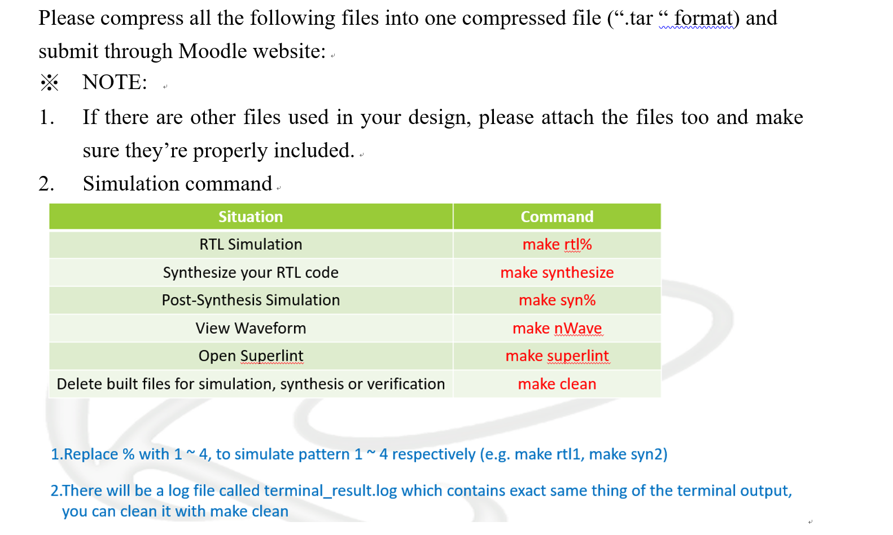

Lab7 第10題：Final Submission Command 與 Moodle 繳交說明滿分版
主題：將所有必要檔案壓縮成 .tar，確認單一 drawBbox.v 架構可完整編譯、模擬、合成與繳交。
中文滿分版修正版數學式Python 對照Verilog 對照外部圖片載入
目錄
一、題目重點 二、.tar 繳交格式 三、修正版數學式 四、Python 驗證流程 五、Verilog 對應 六、圖解與外部圖片 七、提交前檢查清單一、題目重點說明
此題要求將 Lab7 需要繳交的檔案整理成一個 .tar compressed file，並透過 Moodle 上傳。圖中也提醒：若設計有額外使用其他檔案，必須一起附上，並確認檔案被正確包含；若只有單一 drawBbox.v，且所有功能都寫在同一個檔案內，則可採用單檔繳交策略。

本次繳交策略：
本設計採用單一
其中包含：
本設計採用單一
drawBbox.v 整合式架構，Gray、Gaussian、Otsu、Mask、8-connected CCL、Bounding Box 與 Overlay 都在同一個 top module 中完成，沒有外部 submodule。因此正式上傳 Moodle 的核心檔案可以是：Lab7_E24134778.tar其中包含：
Lab7_E24134778/drawBbox.v二、.tar 壓縮與 Moodle 繳交格式
2.1 正確資料夾結構
Lab7_E24134778/
└── drawBbox.v因為本設計沒有拆成 rgb2gray_unit.v、gaussian_unit.v、otsu_unit.v 等外部檔案，所以不需要額外附上 submodule。若未來版本有使用外部 module，則必須全部放入同一資料夾中，否則助教端編譯時會出現 module not found。
2.2 Linux / SoC Lab 正式壓縮指令
tar -cvf Lab7_E24134778.tar Lab7_E241347782.3 檢查 tar 內容
tar -tvf Lab7_E24134778.tar理想輸出應看到：
Lab7_E24134778/
Lab7_E24134778/drawBbox.v2.4 Makefile 指令說明
| Situation | Command | 中文說明 |
|---|---|---|
| RTL Simulation | make rtl% | 執行 RTL 模擬，% 換成 1～4，例如 make rtl1 |
| Synthesize your RTL code | make synthesize | 執行 Design Compiler synthesis |
| Post-Synthesis Simulation | make syn% | 執行合成後 gate-level 模擬，例如 make syn4 |
| View Waveform | make nWave | 開啟 waveform viewer 檢查 clk、state、memory control 與 done |
| Open SuperLint | make superlint | 執行 SuperLint，確認 coverage 達 90% 以上 |
| Clean files | make clean | 清除模擬、合成與驗證暫存檔 |
三、修正版數學式與本題繳交邏輯
3.1 影像尺寸與位址對應
$$N = 256 \times 256 = 65536$$ $$addr = y \times 256 + x$$
因為影像固定為 256×256，所以 x 與 y 皆可用 8-bit 表示，address 則使用 16-bit 從 0 掃描到 65535。
3.2 RGB 轉灰階
$$Gray = \operatorname{RTE}(0.299R + 0.587G + 0.114B)$$
其中 RTE 表示 round to nearest, ties to even。硬體常用整數近似：
$$S = 77R + 150G + 29B$$ $$Gray = \operatorname{RTE}\left(\frac{S}{256}\right)$$
3.3 Gaussian Filter
$$G(x,y)=\operatorname{RTE}\left(\frac{1}{16}\sum_{i=-1}^{1}\sum_{j=-1}^{1}K(i,j)I(x+i,y+j)\right)$$ $$K=\begin{bmatrix}1&2&1\\2&4&2\\1&2&1\end{bmatrix}$$
邊界採 Reflect101，避免影像邊界因補 0 而變暗。
3.4 Otsu Threshold
$$W_b(T)=\frac{\sum_{i=0}^{T}h(i)}{N},\quad W_f(T)=\frac{\sum_{i=T+1}^{255}h(i)}{N}$$ $$\mu_b(T)=\frac{\sum_{i=0}^{T}i h(i)}{\sum_{i=0}^{T}h(i)},\quad \mu_f(T)=\frac{\sum_{i=T+1}^{255}i h(i)}{\sum_{i=T+1}^{255}h(i)}$$ $$\sigma_B^2(T)=W_b(T)W_f(T)(\mu_b(T)-\mu_f(T))^2$$ $$T^*=\arg\max_T \sigma_B^2(T)$$
3.5 Binary Mask、CCL、BBox 與 Overlay
$$M(x,y)=\begin{cases}1,&G(x,y)>T^*\\0,&G(x,y)\le T^*\end{cases}$$ $$M'(x,y)=\begin{cases}1-M(x,y),&\text{if polarity needs correction}\\M(x,y),&\text{otherwise}\end{cases}$$ $$N_8=\{NW,N,NE,W\}$$ $$X_{min}=\min(x),\quad X_{max}=\max(x),\quad Y_{min}=\min(y),\quad Y_{max}=\max(y)$$
Overlay 判斷式如下：若 pixel 位於 bbox 的上、下、左、右邊界，輸出綠色；否則輸出原 RGB pixel。
$$Out(x,y)=\begin{cases}32'h0000\_FF00,&(x,y)\in \partial BBox\\RGB(x,y),&\text{otherwise}\end{cases}$$
四、Python code：先用 Lab7.ipynb 驗證演算法
在 Verilog 硬體化前，先使用 Python 將每個影像處理階段跑出來，可確認數學式與輸出圖是否正確。Python 的角色不是最後提交用，而是作為 golden model / algorithm reference，協助檢查每個中間結果。
import numpy as np
from PIL import Image
IMG_W, IMG_H = 256, 256
GREEN = np.array([0, 255, 0], dtype=np.uint8)
def round_ties_to_even_div256(s):
q = s // 256
r = s % 256
if r > 128:
q += 1
elif r == 128 and (q % 2 == 1):
q += 1
return q
def rgb_to_gray(rgb):
R = rgb[:, :, 0].astype(np.int32)
G = rgb[:, :, 1].astype(np.int32)
B = rgb[:, :, 2].astype(np.int32)
S = 77 * R + 150 * G + 29 * B
return np.vectorize(round_ties_to_even_div256)(S).astype(np.uint8)
def reflect101(p, n=256):
if p < 0:
return -p
if p >= n:
return 2*n - 2 - p
return p
def gaussian_3x3(gray):
K = np.array([[1,2,1],[2,4,2],[1,2,1]], dtype=np.int32)
out = np.zeros_like(gray)
for y in range(IMG_H):
for x in range(IMG_W):
s = 0
for dy in range(-1,2):
for dx in range(-1,2):
yy = reflect101(y + dy, IMG_H)
xx = reflect101(x + dx, IMG_W)
s += int(gray[yy, xx]) * K[dy+1, dx+1]
q, r = divmod(s, 16)
if r > 8 or (r == 8 and q % 2 == 1):
q += 1
out[y, x] = q
return out
def otsu_threshold(img):
hist = np.bincount(img.flatten(), minlength=256).astype(np.float64)
total = img.size
sum_total = np.dot(np.arange(256), hist)
best_t, best_score = 0, -1
w_b, sum_b = 0.0, 0.0
for t in range(256):
w_b += hist[t]
sum_b += t * hist[t]
w_f = total - w_b
if w_b == 0 or w_f == 0:
continue
mu_b = sum_b / w_b
mu_f = (sum_total - sum_b) / w_f
score = (w_b / total) * (w_f / total) * (mu_b - mu_f) ** 2
if score > best_score:
best_score = score
best_t = t
return best_t
# mask = gaussian > threshold
# 若前景比例過高，做 auto-polarity correction
# 接著做 8-connected CCL、計算 bbox、最後 overlay 綠框。五、Verilog code：單一 drawBbox.v 整合式架構
本版本的最大特色是所有流程都整合在同一個 drawBbox.v，不依賴外部 module。這樣的好處是繳交時不會漏檔，助教只要編譯 drawBbox.v 就可以取得完整設計。
5.1 Top module 與 I/O
module drawBbox (
input clk,
input rst,
input enable,
output done,
input [31:0] Img_Q,
output reg Img_CEN,
output reg [15:0] Img_A,
input [31:0] Ur_Q,
output reg Ur_CEN,
output reg Ur_WEN,
output reg [31:0] Ur_D,
output reg [15:0] Ur_A,
input [31:0] Ans_Q,
output reg Ans_CEN,
output reg Ans_WEN,
output reg [31:0] Ans_D,
output reg [15:0] Ans_A
);5.2 FSM 階段
localparam [5:0]
S_IDLE = 6'd0,
S_LOAD = 6'd1,
S_GRAY = 6'd2,
S_HIST_CLEAR = 6'd3,
S_GAUSS_HIST = 6'd4,
S_OTSU_INIT = 6'd5,
S_OTSU_SCAN = 6'd6,
S_COUNT_HI = 6'd7,
S_POLARITY = 6'd8,
S_MASK_WRITE = 6'd9,
S_PARENT_INIT = 6'd10,
S_CCL_SCAN = 6'd11,
S_BBOX_INIT = 6'd12,
S_BBOX_SCAN = 6'd13,
S_BOXMAP_CLEAR = 6'd14,
S_BOXMAP_GEN = 6'd15,
S_DRAW_WRITE = 6'd16,
S_DONE = 6'd17;5.3 Gaussian 與 rounding
q = s >> 4; // 除以 16
rem = s & 4'hF; // 餘數用來做 rounding
if (rem > 8)
q = q + 1;
else if ((rem == 8) && (q[0] == 1'b1))
q = q + 1;5.4 Auto-polarity 與 mask
invert_sel <= (count_hi > 17'd32768);
base_i = (gauss_mem[addr_cnt] > otsu_t) ? 1 : 0;
if (invert_sel)
base_i = !base_i;
mask_mem[addr_cnt] <= base_i[0];5.5 Bounding Box 與綠框輸出
if ((x_i == 0) || (x_i == 255) || (y_i == 0) || (y_i == 255))
bbox_border[root_label] <= 1'b1;
if (box_map[addr_cnt])
Ans_D <= 32'h0000_FF00;
else
Ans_D <= rgb_mem[addr_cnt];六、圖解：從題目指令到最終輸出


6.1 P4 影像處理流程附圖


七、提交前檢查清單
| 檢查項目 | 正確狀態 | 說明 |
|---|---|---|
| 正式上傳格式 | .tar | 不可只上傳 zip 作為正式作業；Moodle 要求 .tar |
| 資料夾名稱 | Lab7_E24134778 | 學號需大寫，避免 file hierarchy 扣分 |
| 核心 Verilog 檔 | drawBbox.v | 單一檔案整合所有功能 |
| 是否需要 submodule | 不需要 | 因本版本沒有外部 module 呼叫 |
| RTL Simulation | P1～P4 PASS | 四個 pattern 皆需通過 |
| Post-Synthesis Simulation | 需依環境補跑 | 正式環境需再確認 make syn1～make syn4 |
| SuperLint | 需附截圖 | coverage 應達 90% 以上 |
| 終端輸出 | terminal_result.log | 可附在報告截圖或摘要中 |
報告可直接貼上的結論：
本次 Lab7 採用單一
本次 Lab7 採用單一
drawBbox.v 整合式 RTL 設計，所有影像處理階段皆在同一檔案內完成，因此不需要額外附上 submodule。繳交時建立 Lab7_E24134778 資料夾，將 drawBbox.v 放入後，以 tar -cvf Lab7_E24134778.tar Lab7_E24134778 壓縮成 .tar 格式上傳 Moodle。此繳交方式可避免漏交 submodule、include path 錯誤與助教環境編譯失敗的風險，並符合 Lab7 submission 的檔案結構要求。